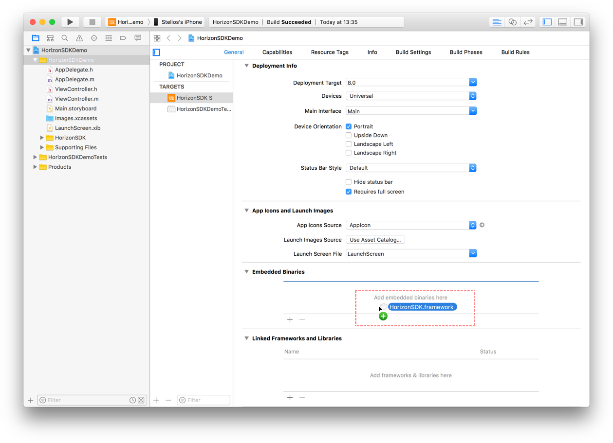
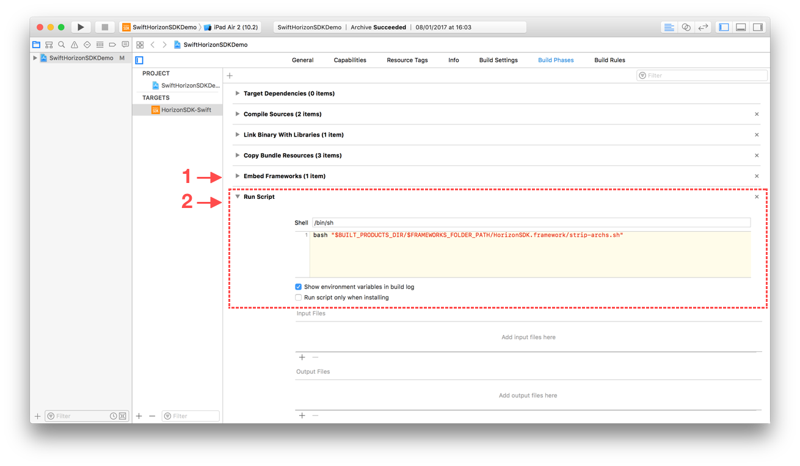

Installation Guide Document
Overview
Horizon iOS SDK provides an easy to use library for developers who want to add video recording capabilities to their iOS apps.
Horizon iOS SDK is built on top of the AVFoundation stack, is GPU accelerated and has full support for realtime, predefined and custom CIFilter instances.
This guide describes the setup of Horizon SDK. For a quick start coding guide, take a look and the Quick Start document.
Project Setup
Prerequisites
In order to follow this guide, you must have the iOS 10.0 SDK and Xcode 8.2 installed on your system. For the latest versions, please visit Apple’s iOS Dev Center.
Run time requirements
The minimum iOS version supported by the SDK is iOS 8.0.
Select installation method
You can get Horizon SDK either via Carthage, CocoaPods or by manually downloading and installing it in your Xcode project.
Carthage
Create or open the Cartfile on your project’s directory.
Add an entry for Horizon SDK:
github "HorizonCamera/HorizonSDK-iOS"
Open a terminal window, cd to your project directory and run:
$ carthage update
You can learn more regarding Carthage integration in the official Github repository.
CocoaPods
Open a command prompt in the Xcode project root directory (where the ‘YourProject.xcodeproj’ file is located).
If you do not yet have a Podfile for your project, run the following command to create an empty Podfile:
$ pod init
In a text editor, open the Podfile and add the following library name:
pod 'HorizonSDK'
At the command prompt, run the following command to install the HorizonSDK pod:
$ pod install
Integration
After getting Horizon SDK, you can integrate it by following the instructions below.
1) Add Horizon SDK as an Embedded Binary
From Xcode, select your project target and on the General tab scroll at the ‘Embedded Binaries’ section. Drag'n'drop HorizonSDK.framework into that section (select “Copy items if needed” if you want the framework file to be copied locally to your project).

2) Add the custom script in the build phases
Add a new Run Script phase in your target’s Build Phases. Make sure this Run Script phase is below the Embed Frameworks build phase (You can drag and drop build phases to rearrange them).
Paste the following line in this Run Script Phase’s script text field:
bash "$BUILT_PRODUCTS_DIR/$FRAMEWORKS_FOLDER_PATH/HorizonSDK.framework/strip-archs.sh"
This script works around the App Store submission bug triggered by universal binaries that contain bitcode.

3) Install documentation (optional)
If you would like to access the HorizonSDK documentation through the Organizer and Quick Help in Xcode, please copy com.hvt.Horizon-SDK.docset from the HorizonSDK Documentation directory into ~/Library/Developer/Shared/Documentation/DocSets/ and restart Xcode. From the console:
cp -r com.hvt.Horizon-SDK.docset ~/Library/Developer/Shared/Documentation/DocSets/
4) Installation complete!
You are now ready to use Horizon SDK and add video recording capabilities to your app! Learn how in our Quick Start guide.